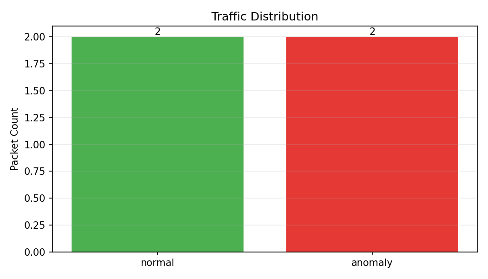
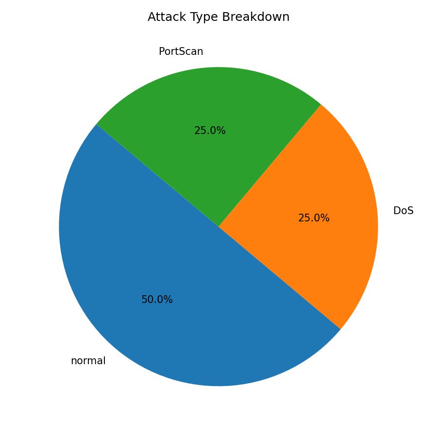

Generated at: 2026-04-06T21:18:07
| Attack Type | Count |
|---|---|
| normal | 2 |
| DoS | 1 |
| PortScan | 1 |


| ip.src | ip.dst | is_anomaly | attack_type | attack_confidence | anomaly_score |
|---|---|---|---|---|---|
| 10.0.0.1 | 10.0.0.5 | 0 | normal | 1.00 | 0.12 |
| 10.0.0.8 | 10.0.0.7 | 1 | DoS | 0.91 | -0.44 |
| 10.0.0.2 | 10.0.0.4 | 0 | normal | 1.00 | 0.07 |
| 10.0.0.9 | 10.0.0.6 | 1 | PortScan | 0.86 | -0.31 |